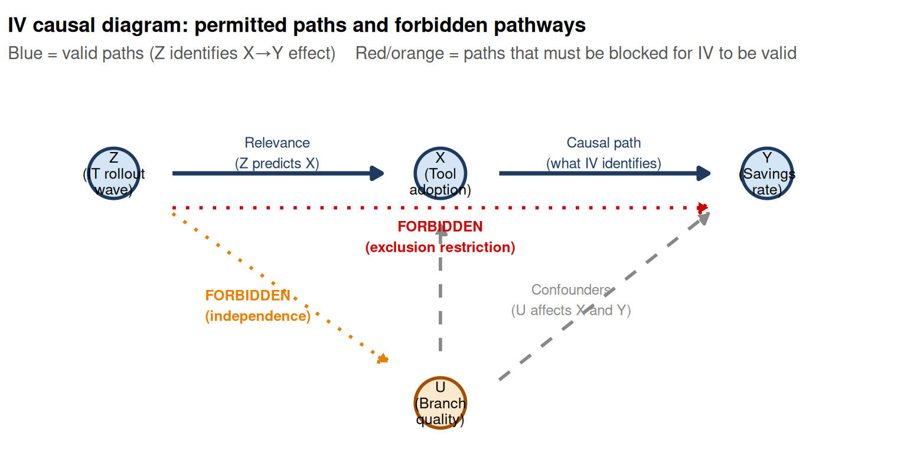

Code
library(ggplot2)
# Node positions
nodes <- tibble(
label = c("Z\n(IT rollout\nwave)", "X\n(Tool\nadoption)", "Y\n(Savings\nrate)", "U\n(Branch\nquality)"),
x = c(0, 2.5, 5, 2.5),
y = c(2, 2, 2, 0)
)
arrow_end <- 0.45 # shorten arrow ends to not overlap node circles
ggplot() +
# --- permitted arrows (blue) ---
# Z → X (relevance)
annotate("segment", x=0.45, xend=2.05, y=2, yend=2,
arrow=arrow(length=unit(.25,"cm"), type="closed"),
color="#1e3a5f", linewidth=1.3) +
# X → Y (causal effect — what we identify)
annotate("segment", x=2.95, xend=4.55, y=2, yend=2,
arrow=arrow(length=unit(.25,"cm"), type="closed"),
color="#1e3a5f", linewidth=1.3) +
# U → X (confound)
annotate("segment", x=2.5, xend=2.5, y=0.45, yend=1.55,
arrow=arrow(length=unit(.25,"cm"), type="closed"),
color="#888888", linewidth=1, linetype="dashed") +
# U → Y (confound)
annotate("segment", x=2.95, xend=4.55, y=0.2, yend=1.65,
arrow=arrow(length=unit(.25,"cm"), type="closed"),
color="#888888", linewidth=1, linetype="dashed") +
# --- FORBIDDEN arrow: Z → Y (dashed red, exclusion violation) ---
annotate("segment", x=0.45, xend=4.55, y=1.7, yend=1.7,
arrow=arrow(length=unit(.25,"cm"), type="closed"),
color="#cc0000", linewidth=1, linetype="dotted") +
annotate("text", x=2.5, y=1.45, label="FORBIDDEN\n(exclusion restriction)",
size=3.2, color="#cc0000", fontface="bold") +
# --- FORBIDDEN link: Z ↔ U (dashed orange, independence violation) ---
annotate("segment", x=0.45, xend=2.1, y=1.65, yend=0.35,
arrow=arrow(length=unit(.25,"cm"), type="closed"),
color="#e67e00", linewidth=1, linetype="dotted") +
annotate("text", x=0.7, y=0.85, label="FORBIDDEN\n(independence)", hjust=0,
size=3.2, color="#e67e00", fontface="bold") +
# --- node circles ---
geom_point(data=nodes, aes(x=x, y=y), shape=21, size=14,
fill=c("#d4e6f5","#d4e6f5","#d4e6f5","#fce8cc"),
color=c("#1e3a5f","#1e3a5f","#1e3a5f","#a05000"),
stroke=1.5) +
geom_text(data=nodes, aes(x=x, y=y, label=label), size=3.3, lineheight=0.9) +
# --- path labels ---
annotate("text", x=1.25, y=2.18, label="Relevance\n(Z predicts X)",
size=3.2, color="#1e3a5f") +
annotate("text", x=3.75, y=2.18, label="Causal path\n(what IV identifies)",
size=3.2, color="#1e3a5f") +
annotate("text", x=3.5, y=0.9, label="Confounders\n(U affects X and Y)",
size=3.2, color="#888888") +
xlim(-0.5, 5.7) + ylim(-0.4, 2.8) +
labs(
title = "IV causal diagram: permitted paths and forbidden pathways",
subtitle = "Blue = valid paths (Z identifies X→Y effect) Red/orange = paths that must be blocked for IV to be valid"
) +
theme_void(base_size = 12) +
theme(plot.title = element_text(size=13, face="bold"),
plot.subtitle = element_text(size=11, color="#555555"),
plot.margin = margin(5, 5, 5, 5))